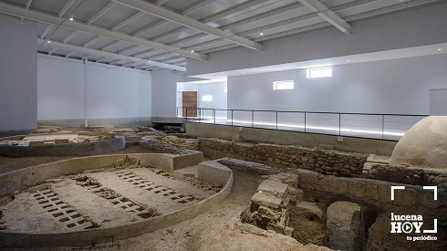
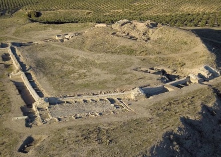
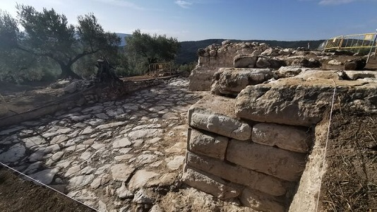
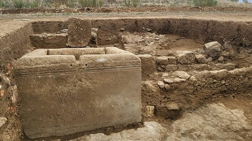

|
CÓRDOBA ROMANA
- Almodóvar del río. Sus orígenes se remontan a la etapa Ibero-Turdetana sobre un cerro a pies del Guadalquivir. Se le identifica con la Carbula, mencionada por Plinio. Antiguo oppidium que gozó de cierta notoriedad, ya que pudo servir como lugar de embarque de los productos de la campiña, aceite y cereal principalmente. Como consecuencia de este comercio se desarrolló una importante industria alfarera, llegando a emitir moneda propia en el siglo II a.e.c y posiblemente en sus cercanías se explotaran minas de plata. Este poblado quedó con la llegada de los romanos integrado dentro del territorio colonial de Córdoba. En la orilla del Río Guadalquivir a su paso por la localidad se hallan vestigios de un antiguo embarcadero que podría ser de origen romano. En los cortijos cercanos de Villaseca o el Temple entre otros se han hallado restos de villas romanas, hornos y alfares de ánforas olearias destinadas a ser exportadas en barcas de ribera por el Guadalquivir. - En febrero de 2018, en un alfar romano en la aldea El Mohíno, en Palma del Río, hallan uno de los mayores hornos para fabricar ánforas romanas. Las ánforas iban hasta Sevilla en barcas de bajo calado y allí se traspasaban a naves mayores que ya se dirigían al puerto de Roma. - Priego de Córdoba. De época romana destacan el horno de cal (siglos I-II) y una necrópolis (siglos III-V). En octubre de 2022, las obras de la Variante de Las Angosturas sacan a la luz un gran yacimiento romano de los siglos I-II. Entre las estructuras han aparecido muros de más de dos metros de altura en muy buen estado de conservación. En enero de 2023, los arqueólogos asocian los restos a una mansio 'estación de servicio' romana. El hallazgo ha desvelado la existencia de varios edificios, entre ellos uno dedicado al almacenaje de mercancía y la atención a los viajeros. - Teba la Vieja. Poblada desde el Calcolítico. El yacimiento arqueológico de Ategua conserva estructuras de las diversas épocas por las que ha atravesado, tales como la muralla ibero-romana, casas, cisternas y templo romanos, fortaleza y zoco islámico. - En Lucena destacamos el yacimiento de Los Tejares, un conjunto de siete hornos romanos dispuestos en batería. Es una de las 22 factorías de época romana documentadas que se instalaron en el actual término municipal de Lucena durante el siglo II a.e.c y especialmente durante los siglos I y II.
 - Posadas. Detuma. Poblada desde la Prehistoria. Ha aparecido catorce villas, destacando la del Cortijo de la Estrella, ya que estudios recientes plantean la posibilidad de que fuese el origen del núcleo poblacional romano de Detumo. Se han hallado los restos de un acueducto romano y una cantera romana, en la zona comprendida entre el sur de Los Rubios y el norte de Paterna. - Rute. El descenso del nivel del pantano de Iznájar en noviembre 2017, ha dejado al descubierto en el término municipal de Rute los restos arqueológicos de una almazara del periodo romano, datada en los siglos I-III. - En febrero de 2018, el descenso del nivel de los pantanos de Puente Nuevo y Sierra Boyera saca a la luz tramos de la vía romana que unía Corduba y Emérita Augusta. La relevancia de esta vía reside en que por ella se organizaba el comercio de todo el mineral que Roma extraía de la comarca de los Pedroches y el Alto Guadiato en época romana. Por ella circulaba el cobre cordobés de Cerro Muriano y del Alto Guadiato -famoso en la Roma del siglo I.-, la plata y el plomo de las minas de Los Pedroches o el preciado mercurio y minio de las minas de Almadén.
- Ategua. El yacimiento arqueológico de Ategua
estaba organizado en torno a diferentes terrazas y rodeado por una
muralla, fue ocupado del siglo VIII al VI a.e.c. Los trabajos también
han permitido el estudio de una cantera de época romana que se explotó
desde la primera mitad del siglo II a. e.c. hasta el siglo III.

- Montemayor. En octubre de 2018 se ha descubierto un carro de época íbera, muy bien conservado, desmontado y parece haber sido cuidadosamente colocado. - En La Rambla, en octubre de 2020, se han encontrado una pieza del arte íbero que podría contar con más de 2.500 años de antigüedad. Se trata de una leona que aparece en actitud devoradora mientras se alimenta comiéndose a otro animal. - En Adamuz, en febrero de 2022, en un movimiento de tierra se descubre un mosaico romano oculto en un olivar. Podría corresponder a un conjunto de época imperial. - Agosto de 2022, en el yacimiento íbero de El Higuerón, que datan en el siglo VI a.e.c, se ha hallado una de las mayores esculturas fálicas del mundo romano. Se trata de un relieve de medio metro de longitud tallado en un edificio íbero-romano que se excava en el yacimiento de Nueva Carteya. Un edificio romano ocupa la cima del cerro, se está definiendo la distribución interna y ya se han excavado prácticamente en su totalidad dos de sus estancias. Yacimiento amurallado realizado en sillares almohadillados, en el que se observan algunos bastiones al norte y oeste. Foto Junta de Andalucía.

- En el Guijo, las prospecciones confirman la ubicación de la ciudad romana perdida de Solia. Tras años de especulaciones, los radares geofísicos han sacado a la luz el trazado de una calzada romana, confirmando así la ubicación de esta ciudad minera junto a este municipio cordobés. Esta localidad de Los Pedroches cuenta con los restos arqueológicos de Majadaiglesia formados por termas, cisternas, pozos, un acueducto y una necrópolis. - En noviembre de 2022, en Fuente Obejuna, hallan en Mellaria la fuente posiblemente mejor conservada de la Hispania romana. La construcción está datada entre los siglos I y II. En el monumento aún se aprecia el caño por el que fluía el agua. En estos trabajos, también se ha recuperado el trazado urbano de la vía Corduba-Emerita. En 2023 se localizó el conocido como castellum divisorium, era el sitio terminal del acueducto, el lugar de potabilización y, por fin, la sede de la distribución mediante tuberías de plomo. Se conocen los lugares de captación, la mayor parte -georreferenciada- del recorrido del canal principal y de los secundarios, los pozos de resalto y limpieza. las excavaciones de 2024 han dado como resultado el conocimiento de 1.160 metros aproximadamente del trazado de la Via Corduba-Emerita a su paso por Mellaria. Ese trazado entra por occidente viniendo de Córdoba y sale por oriente dirección Medellín. Foto abc.es

|